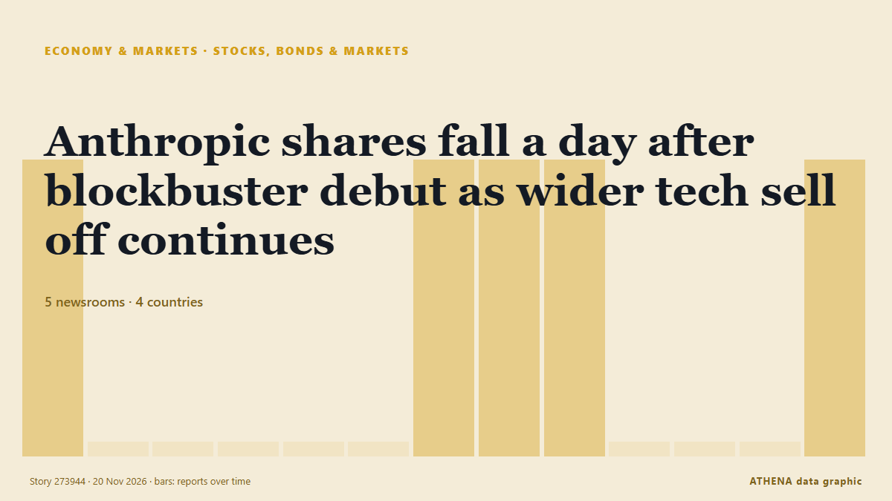

Economics, Finance & Markets
SponsoredPresented by  Cybernetics and Artificial Intelligence Lab Welcome to the Cybernetics and Artificial Intelligence Laboratory, established at the Department of Business Administration of the National and Kapodistrian University of Athens. The lab is headed by Professor Dimitrios Thomakos. The lab aims to do research that can be published in top venues. Our research uses tools and methods of Artificial Intelligence, and lies in the following areas: - Forecasting - Decision making - Cyber security - Finance We are always looking forward to collaborating with exceptional students!
Cybernetics and Artificial Intelligence Lab Welcome to the Cybernetics and Artificial Intelligence Laboratory, established at the Department of Business Administration of the National and Kapodistrian University of Athens. The lab is headed by Professor Dimitrios Thomakos. The lab aims to do research that can be published in top venues. Our research uses tools and methods of Artificial Intelligence, and lies in the following areas: - Forecasting - Decision making - Cyber security - Finance We are always looking forward to collaborating with exceptional students!
Market monitor - official figures
Which way official market measures are moving - up, down or flat - with the latest official figure and its date, and the market news ATHENA verified alongside. Official figures, not live prices.
Energy
| 1 day | 1 week | 1 month | Official figure | |
|---|---|---|---|---|
| Brent crude | ▬ | ▲ | ▼ | $92.94/bblOfficial data of 17 Nov 2026 |
| WTI crude | ▲ | ▼ | ▼ | $89.53/bblOfficial data of 17 Nov 2026 |
| US natural gas (Henry Hub) | ▼ | ▲ | ▼ | $3.10/MMBtuOfficial data of 17 Nov 2026 |
| European natural gas (1 month · 3 months · 12 months)(1M · 3M · 12M) | ▲ | ▲ | ▲ | $25.49/MMBtuOfficial data of 1 Sep 2026 |
| Coal (Australia) (1 month · 3 months · 12 months)(1M · 3M · 12M) | ▲ | ▲ | ▲ | $153.84/tOfficial data of 1 Sep 2026 |
Food
| 1 month | 3 months | 12 months | Official figure | |
|---|---|---|---|---|
| Wheat | ▲ | ▲ | ▲ | $246.85/tOfficial data of 1 Sep 2026 |
US stock markets
| 1 day | 1 week | 1 month | Official figure | |
|---|---|---|---|---|
| S&P 500 | ▼ | ▼ | ▼ | Direction only (index © Cboe)Official data of 19 Nov 2026 |
| Nasdaq Composite | ▼ | ▼ | ▼ | Direction only (index © Cboe)Official data of 19 Nov 2026 |
Rates, risk and the dollar
| 1 day | 1 week | 1 month | Official figure | |
|---|---|---|---|---|
| US 10-year Treasury yield | ▼ | ▲ | ▼ | 5.07 %Official data of 18 Nov 2026 |
| Market volatility (VIX) | ▲ | ▲ | ▲ | Direction only (index © Cboe)Official data of 19 Nov 2026 |
| US dollar, broad index | ▬ | ▲ | ▲ | 122.65Official data of 13 Nov 2026 |
The euro against other currencies
| 1 day | 1 week | 1 month | Official figure | |
|---|---|---|---|---|
| EUR/USD | ▬ | ▼ | ▼ | 1.0990 USDOfficial data of 20 Nov 2026 |
| EUR/GBP | ▲ | ▲ | ▬ | 0.8374 GBPOfficial data of 20 Nov 2026 |
| EUR/CHF | ▼ | ▼ | ▲ | 0.9223 CHFOfficial data of 20 Nov 2026 |
| EUR/JPY | ▼ | ▼ | ▼ | 174.35 JPYOfficial data of 20 Nov 2026 |
| EUR/CNY | ▲ | ▼ | ▼ | 7.3388 CNYOfficial data of 20 Nov 2026 |
| EUR/TRY | ▲ | ▼ | ▬ | 55.579 TRYOfficial data of 20 Nov 2026 |
| EUR/NOK | ▲ | ▲ | ▲ | 10.7180 NOKOfficial data of 20 Nov 2026 |
Sources: US Energy Information Administration (oil, US gas), IMF (European gas, coal, wheat), US Treasury and Federal Reserve (10-year yield, dollar index) Cboe (VIX), S&P Dow Jones Indices (S&P 500) and Nasdaq (Nasdaq Composite), via FRED (Federal Reserve Bank of St. Louis); euro reference rates © European Central Bank. Figures are the latest official values with their date - not live prices. Directions are computed by ATHENA.
Crypto, ETFs and shares in the news
- Anthropic shares fall a day after blockbuster debut as wider tech sell off continues Risk 2.8 20 Nov
- Stocks slide as Anthropic IPO fails to calm AI fears Risk 2.6 20 Nov
- Bitcoin Falls Below US$60,000 as Funds Sell Risk 2.0 20 Nov
- Anthropic Slumps 11% On Second Day Of Trading After Record-Breaking IPO Risk 2.5 20 Nov
- Palo Alto Networks buys AI startup Applied Compute for $4.5bn in stock Risk 0.0 20 Nov
- Nasdaq futures jump on renewed AI optimism ahead of Anthropic’s market debut Risk 4.2 20 Nov
- U.S. AI startup Anthropic floats shares on Nasdaq with record IPO Risk 1.6 20 Nov
- Anthropic becomes one of world’s most valuable public companies in stock market debut Risk 3.8 20 Nov
- Morning Kickstart. Anthropic slides after its IPO and gold breaks lower Risk 2.5 20 Nov
- European shares head for steepest weekly drop since March Risk 2.9 20 Nov

Stocks, bonds & marketsAnthropic shares fall a day after blockbuster debut as wider tech sell off continues
The shares have fallen in the second day of trading as global markets are dominated by investor wariness towards AI. from TheJournal.ie
| 7 Nov | 42 |
|---|---|
| 8 Nov | 65 |
| 9 Nov | 155 |
| 10 Nov | 131 |
| 11 Nov | 129 |
| 12 Nov | 113 |
| 13 Nov | 71 |
| 14 Nov | 39 |
| 15 Nov | 64 |
| 16 Nov | 127 |
| 17 Nov | 99 |
| 18 Nov | 100 |
| 19 Nov | 93 |
| 20 Nov | 42 |
Robert Pattinson said he would wait 20 years to ‘go for’ Bond – he got it in 14
It’s reported that the announcement about who will be the next James Bond is now imminent - with plenty of actors still in the frame to take on the iconic role. from The Scotsman
‘The Altruists’ Review: Netflix’s Slight Sam Bankman-Fried Series Tells a Strange, Crooked Love Story
Framing the downfall of FTX as the culmination of two nerds' inept love affair, Graham Moore and Jacqueline Hoyt's limited series struggles to deepen what we already know about the 2022 financial… from IndieWire
Nasdaq futures jump on renewed AI optimism ahead of Anthropic’s market debut
Nasdaq futures rose more than 2% on Thursday after Anthropic priced its IPO above the marketed range, fueling expectations for a strong market debut and lifting sentiment toward AI-linked stocks… from The San Juan Daily Star
U.S. AI startup Anthropic floats shares on Nasdaq with record IPO
Luxury home sellers are offering multimillion-dollar mansions in exchange for Anthropic stock as the AI giant's IPO approaches. from Business Insider
Anthropic becomes one of world’s most valuable public companies in stock market debut
Anthropic is the first purely AI company to be publicly listed, creating a test for the entire industry. from BBC News
Real estate and finance drive surge in Cyprus’ foreign direct investment
Cyprus’ foreign direct investment (FDI) stock increased by 4.1 per cent to €381.44 billion in 2025, while investment by Cypriot entities abroad rose by 3.2 per cent to €336.54 billion, according to… from Cyprus Mail
Islam forecast to exceed Christianity as world's biggest religion by middle of next decade
Islam is expected to surpass Christianity as the world’s biggest religion by the middle of the next decade, the Pew Research Centre projected on Wednesday. from Dawn
Dude, Where Are My Billions? Ashton Kutcher Edging Closer to Super Rich Status After Anthropic IPO
The actor and famed tech investor's venture capital firm, Sound Ventures holds a roughly 0.5 percent stake in the AI giant. from The Hollywood Reporter
Mortgage interest rates continue to rise in Portugal
The implicit interest rate on all outstanding mortgage agreements rose for the fifth consecutive month in October, reaching 3.231%, its highest level since August 2025, according to the National… from The Portugal News
Gibson Dunn Wins $6.5B Global Freezing Injunction for Binance in Abu Dhabi Court After Crypto Heist
The order is among the first legal steps taken after the record-setting theft of crypto assets from Binance. from Law.com
IMF’s Georgieva warns more AI correction to come
International Monetary Fund (IMF) Managing Director Kristalina Georgieva expects a further correction in the prices of artificial intelligence-related assets in financial markets, warning that… from AzerNews
GIC, one of Anthropic’s largest investors, to stay invested beyond IPO
AI company Anthropic's record-breaking initial public offering saw its shares close 17 per cent higher, giving it a fully diluted valuation of just below US$1.8 trillion. from CNA (Channel NewsAsia)
Anthropic IPO will create thousands of multimillionaire employees
The average Anthropic employee could be worth over $40 million after the company's IPO today, according to SEC filings and investors. from CNBC World
Anthropic IPO draws rush of Japan retail investors
The BBC's Samira Hussain speaks to a retail investor eagerly waiting for the AI company's stock to go live on Thursday. from BBC Business
Japan's core inflation accelerates to 2.2% in October
Headline consumer inflation rises to 2.3% from 2.1% in September, driven by higher energy costs, official data shows. from Anadolu Agency (English)
Anthropic valuation soars above £1.5 trillion in record stock market float
It has eclipsed Elon Musk’s bumper SpaceX float in June as the biggest stock market debut of all time. from Evening Standard (London)
Gold and silver prices rise on commodity markets
Gold and silver prices have risen on the COMEX commodity exchange in New York. from AzerNews
Anthropic Shares End First Day Of Trading Up 17% In Volatile Session As AI Giant Goes Public
UPDATED after market close: Anthropic shares ended their first day of trading at $97.17, up 17% from their $83 IPO price, but off their high for the day, in a volatile session. from Deadline
Brazil's Largest Exchange Mercado Bitcoin Halts Withdrawals After $40 Million Hack
Brazil's largest crypto exchange paused deposits and withdrawals after a security incident. from Decrypt
Anthropic prices its IPO at $83 a share, valuing it at about $1.5tn
Anthropic has priced its IPO at $83 a share, above the $70 to $78 range it marketed, people familiar with the matter told Natasha Mascarenhas and Bailey Lipschultz of Bloomberg, who reported the… from The Next Web
ASX slumps, Wall Street dives despite strong debut for Anthropic
The Australian sharemarket has declined at the open after Anthropic’s strong debut on Wall Street was not enough to stop the bleeding on Wall Street. from The Age
Newcomer wins top stock market journalism award
Fiji Television journalist Eparama Warua, who “did not even take up anything in business in high school and on to tertiary”, won the Stock Market Journalist of the Year award, a new category, at the… from Post-Courier (PNG)
Thanksgiving dinner will cost more this year, Farm Bureau says
Record turkey prices and higher fuel costs could make Thanksgiving dinner more expensive this year, according to a survey released Wednesday. from Fast Company
Former owner of internet-famous squirrel charged with mortgage fraud
One of the owners of a famous internet squirrel named Peanut has been charged with multiple felonies, including mortgage fraud. from The Independent
Kenya’s inflation rises to 6.76% as cost of living pressures persist
Kenya’s annual inflation rate increased to 6.8 per cent in September 2026, extending the pressure on household budgets as the prices of food, transport and essential services continued to rise. from People Daily
Indonesia central bank hikes rates to support rupiah
JAKARTA: Indonesia's central bank raised its policy rates by 25 basis points on Wednesday, resuming a tightening cycle intended to put a floor under the rupiah after the currency hit multiple record… from New Straits Times
Pierce Brosnan sends message to new James Bond Robert Pattinson
Former James Bond star Pierce Brosnan has given Robert Pattinson his seal of approval, recalling their time working together more than 15 years ago. from Stuff
Anthropic to smash IPO records with £1.13trn valuation
The maker of the Claude artificial intelligence tool has priced its shares at 83 dollars each. from The Irish News (Belfast)
BoE policymaker refuses to rule out back-to-back rate rises
Clare Lombardelli says high energy prices and resilience of UK growth mean there is a case for a further increase ‘in the near term’ from Financial Times - Global economy
Deutsche Bank processed $582 million in suspicious Epstein-linked transactions
German banking giant Deutsche Bank processed approximately $582 million in transactions flagged as suspicious in connection with convicted sex offender Jeffrey Epstein, according to newly leaked… from AzerNews
IMF Reaches Agreement with Egypt to Unlock $2.3 Billion in Funds
Egypt's programme with the IMF was expanded to $8 billion in March 2024, when the country was grappling with high inflation and foreign currency shortages. from The New Arab
FinMin Pierrakakis’ response to the European Commission: Differences in growth and investment forecasts
National Economy and Finance Minister and Eurogroup President Kyriakos Pierrakakis outlined the key projections in the final draft of Greece’s 2027 budget at the Naftemporiki conference. from Naftemporiki (English)
Armenian Economy Minister: Armenia not considering replacing EAEU with European Union
My goal, as the minister of economy, is to increase Armenia's export volumes to both the EU, the EAEU, and the Middle East markets. from NEWS.am (English)
US DOE grants $2.8bn conditional loan for Wyoming grid project
The US DOE Office of Energy Dominance Financing has announced up to $2.8bn conditional loan commitment for the Wyoming Intertie project. from Energy Monitor